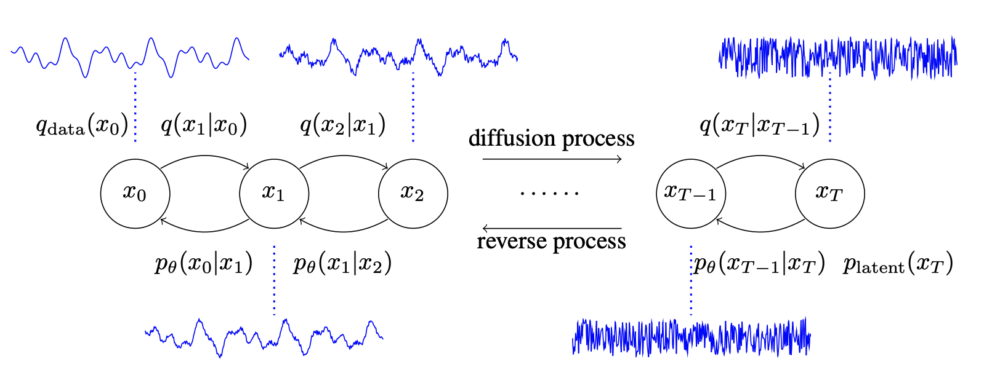

A talk at Ghent University on
Score-based generative modelling: intro and ongoing research


\[ \newcommand{\v}[1]{\boldsymbol{#1}} \newcommand{\m}[1]{\mathbf{#1}} \newcommand{\c}[1]{\mathcal{#1}} \newcommand{\d}{\textrm{d}} \newcommand{\R}{\mathbb{R}} \newcommand{\E}{\mathbb{E}} \]

Using Langevin dynamics to sample from a mixture of two Gaussians. (from: Yang Song)
Naive score-based generative modeling
\[ \]

Score-based generative modeling with score matching + Langevin dynamics. (from: Yang Song)
Pitfalls
\[ \]

- Score is badly estimated in low-density areas
- Langevin dynamics has slow mixing rates
Multiple noise levels

Gaussian noise to perturb the data distribution
Song and Ermon (2019) suggest to perturb data points such that they populate low data density regimes.
Markov chain

Consider a Markov chain \(\v{x}_0 \sim p_{0}\) and \(\v{x}_{k+1} \sim p_{k+1|k}(\cdot | \v{x}_k)\), which gives
Forward
\[ p(\v{x}_{0:K}) = p_0(\v{x}_0) \prod_{k=0}^{K-1} p_{k+1|k}(\v{x}_{k+1} | \v{x}_k) \]
Backward
\[ p(\v{x}_{0:K}) = p_K(\v{x}_K) \prod_{k=K-1}^{0} p_{k|k+1}(\v{x}_{k} | \v{x}_{k+1}) \]
where \(p_{k|k+1}(\v{x}_{k} | \v{x}_{k+1})\) is unknown but can be obtained with Bayes’ rule.
Generative modelling with multiple noise levels
Let \[ p_0 = p_{data} \]
Choose \[ p_{k+1|k}(\v{x}_{k+1} | \v{x}_k) = \c{N}(\v{x}_{k+1}| \alpha \v{x}_k, (1 - \alpha^2)\m{I}) \]
such that for large enough \(K\) we have \[ p_K \approx p_{ref} = \c{N}(0, \m{I}). \]
Annealed Langevin Dynamics
- \(\approx\) Noise Conditional Score Network (NCSN) by Song and Ermon (2019)
- \(\approx\) Denoising Diffusion Probabilistic Models (DDPM) by Ho, Jain, and Abbeel (2020)


Perturbing data with an SDE in continuous time
From a (large) discrete set of noise scales \(\rightarrow\) continuous number.

The SDE can be written as \[ \d \v{x}_t = f(\v{x}_t, t) \d t + g(t) \d \m{W}_t,\qquad \v{x}_0 \sim p_{data} \] where \(f\) and \(g\) are the drift and diffusion terms, and \(\m{W}_t\) is standard Brownian motion. Heuristically, you can think of it as “\(\d \m{W}/\d t \sim \c{N}(0, \d t)\)”.
Reversing the SDE for sample generation

Reverse process (Nelson’s duality)
\[ \d \v{x}_t = \big[f(\v{x}_t, t) - g^2(t) \nabla_\v{x} \log p_t(\v{x})\big] \d t + g(t) \d \bar{\m{W}}_t,\quad \v{x}_T \sim p_T \] where \(\d t\) represents a negative infinitesimal time step as \(t=T \rightarrow 0\).
Continuous-time denoising — Song et al. (2021)

Forward-Reverse
- Continuous-time formulation generalizes the discrete approaches.
- Log-likelihood computations \(\log p_\theta(\v{x}_0)\) (not shown here).
Motivation
- Diffusion models have been used on different data modalities:
